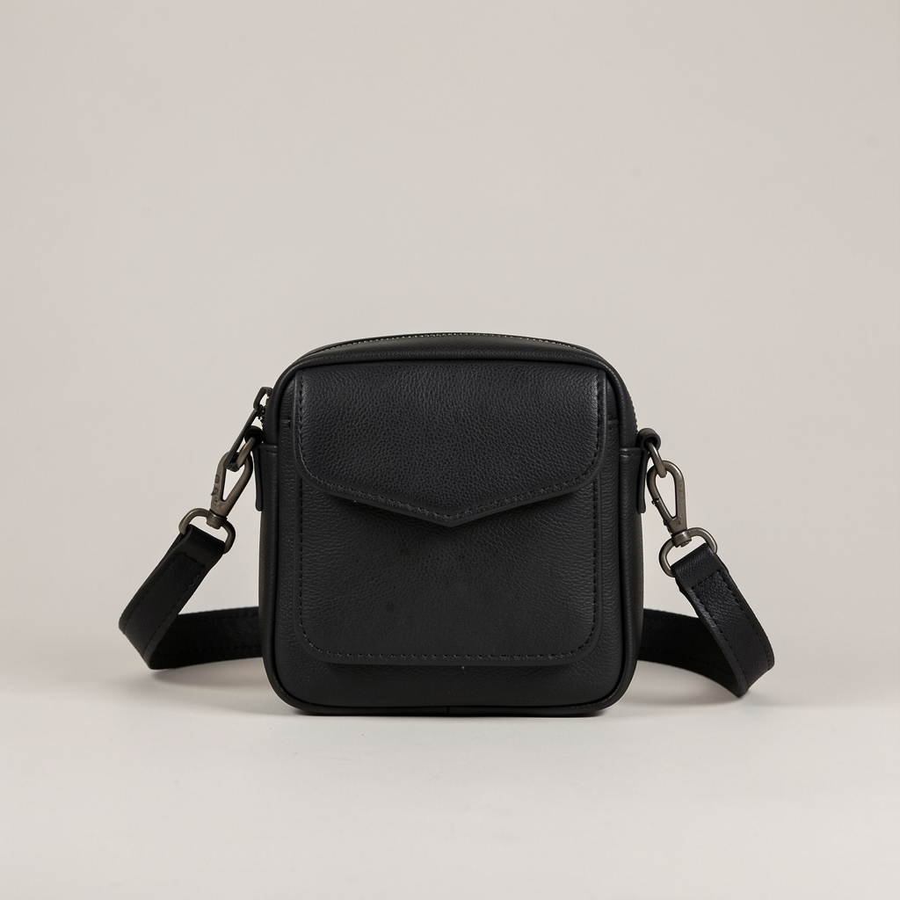

El bolso que me llevó a la conferencia que cambió mi carrera
Billete de ida y vuelta, portátil, un cuaderno con la primera página en blanco y este tote que aguanta todo. En la fila de embarque entendí que mi carrera iba a cambiar.

El bolso
Tote de viaje de cuero reforzado en las asas. La diferencia entre un tote bonito y un tote de verdad la marca el refuerzo del asa: este aguanta un portátil, un cargador, una botella de medio litro y un abrigo sin que el hombro lo pague.
Tiene una bolsa interior con cremallera donde guardo lo que no puede perderse: pasaporte, billetes, y aquel cuaderno de primera página en blanco.
Mi historia
Me pagaron una conferencia en Berlín. No era ponente: era oyente con acreditación y mucho ojo. En la fila de embarque, con el tote cargado hasta arriba, entendí algo que no supe formular hasta meses después: que iba a volver distinta.
Hablé con tres personas, conseguí un contacto que hoy es cliente y apunté en la primera página del cuaderno un plan que aún dirijo. El tote ha volado ya cuarenta veces. Las asas siguen enteras. Yo también.
Hay viajes que se miden en kilómetros y otros en lo que cabe dentro del bolso al volver.